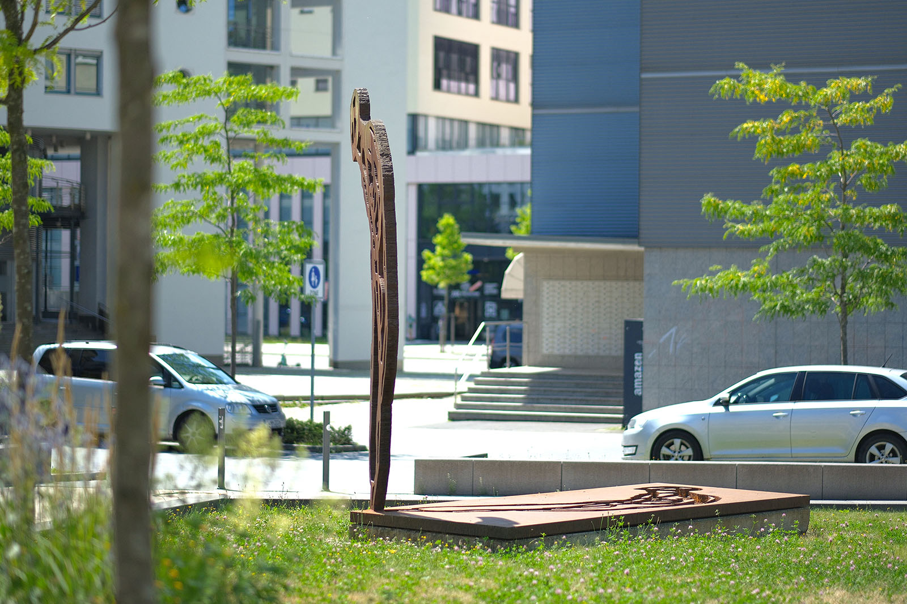
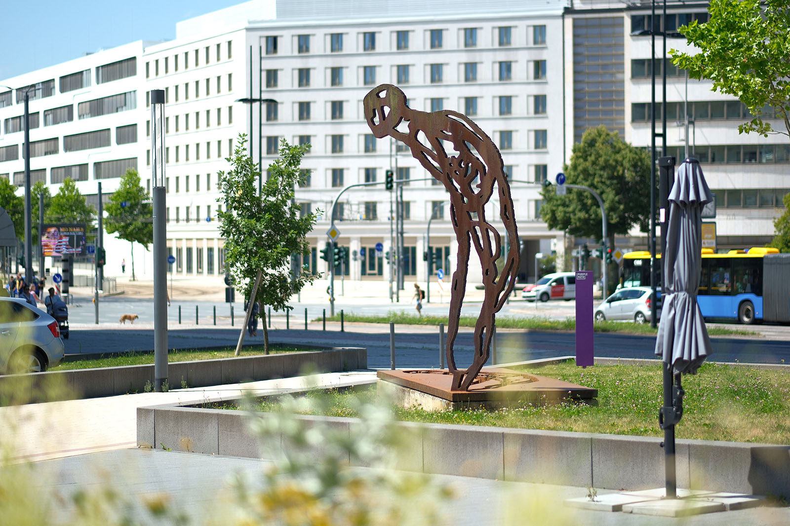
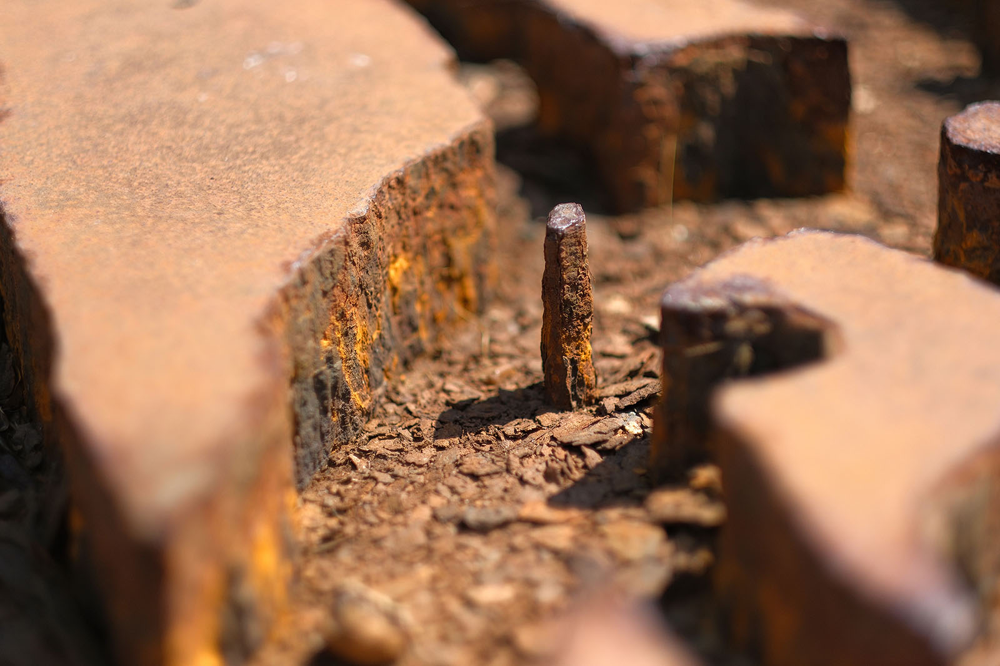
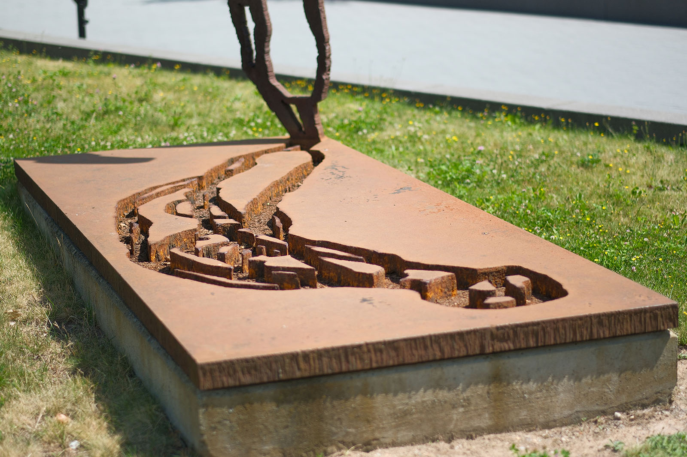
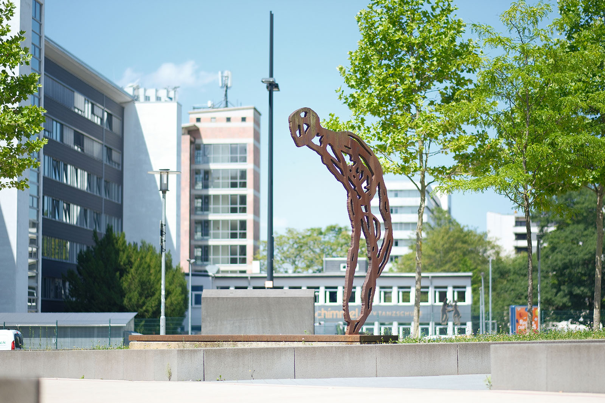

Recherche und Werkbeschreibung: Roman Pilz. Text und Fotografien wechseln sich wie in einem Magazin ab. Ein Klick auf ein Bild öffnet die Großansicht.
Die "Angstfigur" gehört seit den 1970er Jahren zum immer wieder variierenden, streng begrenzten Repertoire symbolhafter Menschenbilder von Michael Morgner. Der Künstler beschreibt diese konkrete Figur als "Geschenk", das er beim Zeichnen am Strand von Ahrenshoop aufgefunden habe und seitdem immer weiter verfeinerte.
Während die Urform der Figur vom Künstler also zunächst in der unmittelbaren Natur, von oberhalb einer Düne, beim Beobachten von Badenden an der Ostseeküste eingefangen wurde – so sprach ihre Gestalt Morgner später als emblematisches Sinnbild für das Leben in der DDR an: Der Zwang zur "allgemeinen Gleichschaltung" gepaart mit der Unmöglichkeit, sich diesen Verhältnissen in der unmittelbaren Gegenwart zu entziehen oder ihnen eine positive Perspektive entgegenzustellen, erzeugt ein Gefühl existenzieller Unsicherheit und "Angst".
Michael Morgner wurde 1942 in Dittersdorf (Amtsberg) bei Chemnitz geboren. a. bei Fritz Fröhlich, Heinz Wagner, Harry Blume und Irmgard Horlbeck-Kappler, und macht 1966 sein Diplom.
Ab 1966 arbeitet er als freischaffender Künstler, zunächst in Dittersdorf und Karl-Marx-Stadt und seit 1973 bis heute in Einsiedel, einem ländlich geprägten Stadtteil von Chemnitz. 1973 ist Morgner beteiligt an der von der Verkaufsgenossenschaft bildender Künstler organisierten Neugründung der progressiven "galerie oben" in Karl-Marx-Stadt. Als Mitarbeiter im künstlerischen Vorstand nimmt er auch wesentlichen Anteil an der Konzeption und Ausstellungsarbeit.
Von 1977 bis 1982 ist er aktives Mitglied der Künstlergruppe und Produzentengalerie "Clara Mosch" in Chemnitz-Adelsberg. Seit 1992 ist er auch Mitglied der Sächsischen Akademie der Künste und der Freien Akademie der Künste in Leipzig. 1994 wird er Gründungsmitglied des Vereins Kunst für Chemnitz.
1992 erhält Morgner den Kunstpreis der Künstler anlässlich der Großen Kunstausstellung NRW Düsseldorf. Er wird außerdem 2012 mit dem Gerhard-Altenbourg-Preis und 2018 mit dem Schmidt-Rottluff-Kunstpreis ausgezeichnet. 2023 erhält er den Verdienstorden der Bundesrepublik Deutschland für seine Art des politischen Widerstands durch seinen persönlichen Einsatz für die künstlerische Freiheit.
Das anfangs hauptsächlich malerische und zeichnerische Schaffen von Morgner ist zunächst stark von Menschenbildern und Landschaften geprägt. Ab den 1970er Jahren wandelt sich sein Werk zu einem stark abstrahierten und farblich reduzierten Ausdruck. Seine Werke sind von einem stark begrenzten Fundus an von ihm kultivierten natürlichen Formen und Zeichen mit starkem Symbolwert geprägt.
Diese Motive variiert er immer wieder durch verschiedene Medien, Techniken und auch sein eigenes performatives Handeln. Insbesondere die Technik der Lavage und Collage wird zu seinem Erkennungszeichen. Michael Morgner ist weit über die Grenzen seiner Heimatstadt Chemnitz hinaus bekannt.
Er gilt als einer der bedeutendsten zeitgenössischen Künstler aus Deutschland und der ehemaligen DDR. Der hauptsächlich als Maler, Grafiker und Aktionskünstler tätige Künstler beginnt seit den 1990er Jahren auch mit einem umfassenden plastischen Werk. Viele der Plastiken aus Holz, Stahl und Bronze befinden sich heute in Museen und im Privatbesitz im In- und Ausland.
Große Formate sind im öffentlichen Raum in Ahrenshoop, Chemnitz, Frankfurt am Main, auf Gomera, in Halle, Leipzig, München, Hagen und Dresden aufgestellt. In Chemnitz befinden sich neben der Plastik vor dem Technischen Rathaus auch eine große Brunnen-Plastik vor dem Firmensitz der enviaM an der Chemnitztalstraße sowie ein von ihm gestalteter Raum im Heck-Art (ehemals Fritz-Heckert-Haus) an der Mühlenstraße.
Die silhouettenhafte Chiffre wird auch deshalb zum Leitmotiv des Künstlers, weil sich Morgner ab Ende der 1970er Jahre fast ausschließlich einer farblich und formal stark reduzierten Formensprache verschreibt, die als existenzialistisch beschrieben werden kann. Er ist dabei wesentlich beeinflusst von der Kunstgeschichte, wo er bei der klassischen Moderne und der christlichen Kunst starke Vorbilder findet, sowie von persönlichen Erfahrungen existenzieller Grenzsituationen wie Krieg und Tod.
Morgner, der seinen künstlerischen Weg mit einem Studium als Gebrauchsgrafiker begann, variiert die Gestalt der "Angstfigur" nach der Zeichnung, hauptsächlich im Medium der Grafik bzw. davon ausgehenden Überarbeitungen mittels Prägung, Collage und Übermalung, hauptsächlich auf Papier. 1986 findet die schwarze Gestalt im Mappenwerk "Ecce Homo" ihre feste Form. Gleich drei Radierungen zeigen gitterartige, mäandernde Konturlinien, die einen gebeugten Körper bilden, dessen Extremitäten eng am Körper liegen. Der Bereich der Brust scheint Rippenknochen hervortreten zu lassen und nur der Kopf mit einer seitlich geneigten, aufwärtsstrebenden Haltung wirkt dem abwärtsziehenden Gewicht des Körpers entgegen.
Die Pose von Morgners "Angstfigur" wirkt ähnlich wie in der christlichen Ikonografie gefesselt und erschöpft, aber zugleich widerständig, weil das Opfer in der Gewissheit göttlicher Gerechtigkeit demütig erduldet wird. Das spätestens seit der frühen Neuzeit populäre Ecce-homo-Motiv ist im engeren Sinne nach dem im Johannesevangelium überlieferten Ausruf des römischen Statthalters Pontius Pilatus vor dem jüdischen Volk benannt. "Siehe, der Mensch" illustriert die Passion Christi: als Ausgelieferten und Gefolterten, vorgeführt, verhöhnt und ungerecht verurteilt.
Die Radierung der "Angstfigur" diente Anfang der 1990er Jahre als Vorlage für Morgners erste im eigentlichen Sinne als Plastiken zu bezeichnenden Arbeiten. Er schuf zwar zuvor bereits objekthafte Assemblagen, oft in Kombination mit aufgefundenen Materialien und weiterverarbeiteten Papierarbeiten, ab 1994 aber, vielleicht auch durch die neuen Möglichkeiten nach der Wende, fand er mit dem rohen, vom Rost gefärbten Stahl als Material ein ähnlich minimalistisches Medium wie in seiner monochromen Tuschemalerei. Die zweidimensionale, grafische Form wurde nun in Zusammenarbeit mit Schlossern und Metallbauern in immer größere Formate übersetzt.
Morgner gestaltet bei seinen Skulpturen zunächst ein formatgetreues Modell aus Holz, das anschließend durch Überarbeitung meist als eigenständiges Werk weiterbesteht. Der erste, kleinere Entwurf der Plastik vor dem Technischen Rathaus war von Morgner 1994 als Mahnmal für die Bombardierung von Chemnitz im 2. Weltkrieg konzipiert worden, das 1995 anlässlich des 50. Jahrestages bei der Alten Post aufgestellt werden sollte.

Eine liegende Variante der Figur war ebenfalls als Mahnmal für Dresden angedacht. Später überzeugte der Entwurf bei einer Ausstellung in der "galerie oben" den Bankier und Kunstmäzen, Dr. Karl Gerhard Schmidt, der diese anschließend für den Neubau der SchmidtBank an der Hartmannstraße beauftragte, sich aber ein wesentlich monumentaleres Format wünschte. Der Auftrag wurde 1997 von einer Chemnitzer Metallbaufirma umgesetzt.
Die 8 Zentimeter starken Stahlbleche sind ähnlich wie Baustahl nur sehr gering legiert, um die Festigkeit des Materials zu erhöhen. Das Eisen soll ganz bewusst unter den Einfluss der Witterung seine charakteristische Rost-Patina ausbilden, oberflächlich spröde und rau werden, sozusagen "altern". Morgners Existenzialismus wird hier von einer Art romantischer Ästhetik flankiert, die ein naturwüchsiges Wachstum allem Glatten und Fabrizierten vorzieht.
Die Figur wurde per Hand im Brennschneideverfahren ausgeschnitten und stellenweise, möglichst verdeckt, zusammengeschweißt. Auf nur einem Punkt ruhend scheint die etwa 3,5 Meter hohe Figur trotz ihres tonnenschweren Gewichts leicht über der rechteckigen Grundplatte zu schweben. Die Silhouette und der Ausschnitt am Boden ergänzen sich wie Positiv- und Negativbild.
Nach der Insolvenz der SchmidtBank im Jahr 2005 verblieb die Skulptur zunächst für einige Jahre im Innenhof der heutigen SchmidtBank-Passage. Durch den 2018 erfolgten Ankauf durch die Stadt Chemnitz wurde die ursprünglich in Privatbesitz befindliche Plastik langfristig für die Öffentlichkeit gesichert. Die Plastik wurde anlässlich der Benennung der Freifläche vor dem Neuen Technischen Rathaus an der Dresdner Straße als "Friedensplatz" am 5. März 2018 aufgestellt. So wurde 73 Jahre nach der Bombennacht von Chemnitz und über 20 Jahre nach Morgners erstem Anlass zur Konzeption der Angst-Plastik ein Sinnbild für die bleibenden Verluste und das Überleben nach Krieg und Zerstörung geschaffen.
Morgner sieht die "Angstfigur" als Gegenstück zur ebenfalls als Plastik ausgestalteten Figur des "Schreitenden" – für ihn ein Sinnbild der Wiedervereinigung. Während ihm als Kleinkind ganz persönlich die Bomben auf Einsiedel unauslöschlich im Gedächtnis blieben und er als Künstler in der DDR gegen Widerstände ankämpfen musste – sieht er seine Figuren als universelle Metaphern für die Bewältigung des Krieges oder der deutschen Wiedervereinigung. Die Figur der "Angst" steht in diesem Sinne beispielsweise auch im öffentlichen Raum von Frankfurt am Main und Dresden, der "Schreitende" in Ahrenshoop und München.

In Chemnitz kann man vor dem Gebäude des Energieversorgers enviaM auch eine Variante der Gestalt "Reliquie Mensch" sehen, die als Brunnenfigur zudem vom Narziss-Mythos beeinflusst ist: einen "Aufsteigenden" und "Fallenden", mit dem Titel "Spannung" (2001).
Michael Morgner wurde 1942 in Dittersdorf (Amtsberg) bei Chemnitz geboren. a. bei Fritz Fröhlich, Heinz Wagner, Harry Blume und Irmgard Horlbeck-Kappler, und macht 1966 sein Diplom.
Ab 1966 arbeitet er als freischaffender Künstler, zunächst in Dittersdorf und Karl-Marx-Stadt und seit 1973 bis heute in Einsiedel, einem ländlich geprägten Stadtteil von Chemnitz. 1973 ist Morgner beteiligt an der von der Verkaufsgenossenschaft bildender Künstler organisierten Neugründung der progressiven "galerie oben" in Karl-Marx-Stadt. Als Mitarbeiter im künstlerischen Vorstand nimmt er auch wesentlichen Anteil an der Konzeption und Ausstellungsarbeit.
Von 1977 bis 1982 ist er aktives Mitglied der Künstlergruppe und Produzentengalerie "Clara Mosch" in Chemnitz-Adelsberg. Seit 1992 ist er auch Mitglied der Sächsischen Akademie der Künste und der Freien Akademie der Künste in Leipzig. 1994 wird er Gründungsmitglied des Vereins Kunst für Chemnitz.
1992 erhält Morgner den Kunstpreis der Künstler anlässlich der Großen Kunstausstellung NRW Düsseldorf. Er wird außerdem 2012 mit dem Gerhard-Altenbourg-Preis und 2018 mit dem Schmidt-Rottluff-Kunstpreis ausgezeichnet. 2023 erhält er den Verdienstorden der Bundesrepublik Deutschland für seine Art des politischen Widerstands durch seinen persönlichen Einsatz für die künstlerische Freiheit.

Das anfangs hauptsächlich malerische und zeichnerische Schaffen von Morgner ist zunächst stark von Menschenbildern und Landschaften geprägt. Ab den 1970er Jahren wandelt sich sein Werk zu einem stark abstrahierten und farblich reduzierten Ausdruck. Seine Werke sind von einem stark begrenzten Fundus an von ihm kultivierten natürlichen Formen und Zeichen mit starkem Symbolwert geprägt.
Diese Motive variiert er immer wieder durch verschiedene Medien, Techniken und auch sein eigenes performatives Handeln. Insbesondere die Technik der Lavage und Collage wird zu seinem Erkennungszeichen. Michael Morgner ist weit über die Grenzen seiner Heimatstadt Chemnitz hinaus bekannt.
Er gilt als einer der bedeutendsten zeitgenössischen Künstler aus Deutschland und der ehemaligen DDR. Der hauptsächlich als Maler, Grafiker und Aktionskünstler tätige Künstler beginnt seit den 1990er Jahren auch mit einem umfassenden plastischen Werk. Viele der Plastiken aus Holz, Stahl und Bronze befinden sich heute in Museen und im Privatbesitz im In- und Ausland.
Große Formate sind im öffentlichen Raum in Ahrenshoop, Chemnitz, Frankfurt am Main, auf Gomera, in Halle, Leipzig, München, Hagen und Dresden aufgestellt. In Chemnitz befinden sich neben der Plastik vor dem Technischen Rathaus auch eine große Brunnen-Plastik vor dem Firmensitz der enviaM an der Chemnitztalstraße sowie ein von ihm gestalteter Raum im Heck-Art (ehemals Fritz-Heckert-Haus) an der Mühlenstraße.

